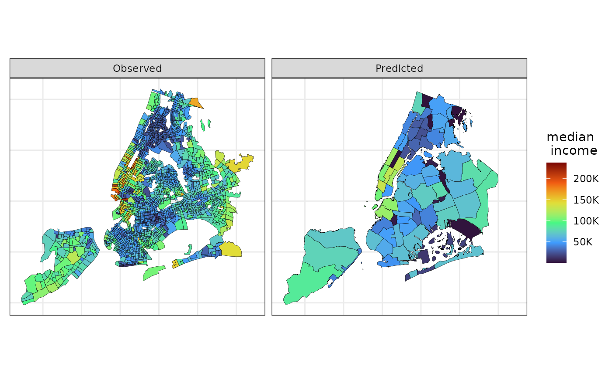

Often, in an applied setting, it is interesting to compute estimates (and quantify its associated uncertainty) of socioeconomic and demographic variables for different administrative regions within the same city. Computing estimates is trivial when applying the Areal Interpolation (Goodchild and Lam 1980) approach. However, a common criticism regarding this method is that it does not provide uncertainty measures associated with the estimates (Bradley, Wikle, and Holan 2016). Our package provides the simple areal interpolation along with an approximation and an upper bound for the variance of the computed estimates when the variance associated with the observed data is known, which is a common fact when working with survey data. To illustrate how does it work, we are going to show how to estimate a variable observed at census tracts in the Public Use Microdata Areas (PUMAs) in NYC.
To load the data and the packages needed for this tutorial run the chunk of code below.
library(sf)
#> Linking to GEOS 3.8.0, GDAL 3.0.4, PROJ 6.3.1
library(smile)
library(ggplot2)
data(nyc_surv)
data(nyc_comd)Since the nyc_surv data proves a “margin of error” instead of a variance, we are going to use the piece of code below to approximate the variance. We are assuming the margin of error was calculated using a 95% confidence interval based on the Normal distribution.
nyc_surv <- transform(nyc_surv,
my_var = moe / qnorm(p = .975))
nyc_surv <- transform(nyc_surv, my_var = my_var * my_var)Now, to estimate a variable observed at the nyc_surv dataset into the nyc_comd data we can run the following command:
estimate_comd <-
ai(source = nyc_surv, target = nyc_comd,
vars = "estimate")where source is the “source” dataset, i.e., the one on which we observe the variable we wish to estimate at the target dataset. The argument vars is a character (scalar or vector) containing the name of the variable (or variables) at the source that are going to be estimated at the target regions. This function does not quantify the uncertainty associated with the estimates, though. In order to get a variability measure associated with the estimates, we need to use the function ai_var (see the chunk of code below). The function is quite similar to the before mentioned ai. The differences are: 1) vars must be a scalar; 2) the argument my_var is another length 1 character indicating the name of the variable that contains the variance of the observed variable in the source dataset; and 3) the argument var_method indicates whether we are going to use the Moran’s I (var_method = "MI") to approximate the autocorrelation between areas and, therefore, approximate the variance of the estimates or the Cauchy–Schwartz (var_method = "CS") inequality to calculate an upper bound for such variances. The output of the ai_var function is the target (sf data.frame) with two additional columns, est and se_est, representing the estimated variable and its corresponding (approximate) standard error.
estimate_comd <-
ai_var(source = nyc_surv, target = nyc_comd,
vars = "estimate", vars_var = "my_var",
var_method = "MI")The next piece of code uses ggplot2 to plot the observed and estimated variable at NYC census tracts and community districts, respectively.
viz_dt <-
rbind(
transform(nyc_surv, source = "Observed", est = estimate)[c("source", "est")],
transform(estimate_comd, source = "Predicted")[c("source", "est")]
)
ggplot(data = viz_dt,
aes(fill = est)) +
geom_sf(color = 1, lwd = .1) +
scale_fill_viridis_c(option = "H") +
theme_bw() +
facet_wrap( ~ source) +
theme(axis.text = element_blank())
Reference
Bradley, Jonathan R., Christopher K. Wikle, and Scott H. Holan. 2016. “Bayesian Spatial Change of Support for Count-Valued Survey Data with Application to the American Community Survey.” Journal of the American Statistical Association 111 (514): 472–87. https://doi.org/10.1080/01621459.2015.1117471.
Goodchild, Michael F, and Nina Siu-Ngan Lam. 1980. “Areal Interpolation: A Variant of the Traditional Spatial Problem.” Geo-Processing 1: 279–312.